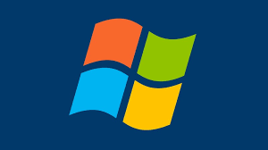

Microsoft Windows é o sistema operacional (SO) mais popular do mundo para computadores pessoais (PCs) e notebooks, desenvolvido pela Microsoft. Ele gerencia o hardware (mouse, impressora, teclado), arquivos e softwares, facilitando a interação entre o usuário e a máquina por meio de uma interface gráfica com janelas e ícones.
